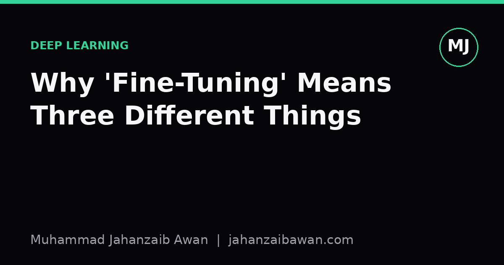

Why 'Fine-Tuning' Means Three Different Things
The same word gets used for full retraining, parameter-efficient adaptation, and prompt-level steering. Confusing the three leads to wasted compute and misread results.

The word that quietly does three jobs
I have sat in meetings where two people argued about whether 'fine-tuning' a model was expensive or cheap, and it took ten minutes to realise they meant completely different procedures. One person meant retraining every weight in a large network on a new dataset. The other meant writing a better prompt and calling it a day. Both used the same word. Neither was wrong, exactly, but the conversation was useless until we separated the meanings.
This matters because the word carries an implicit promise about cost, risk, and what kind of evaluation you owe your results. If someone tells you they fine-tuned a model and got a nice accuracy bump, you cannot judge whether that is impressive, expected, or an artefact of leakage until you know which of the three things they actually did. The term has drifted to cover a full spectrum of interventions, from touching every parameter to touching none at all.
I want to lay out the three meanings plainly, give each a concrete worked example, and then explain why the distinction changes how you should read a results table.
Meaning one: full fine-tuning, updating every weight
The oldest and most literal meaning is this: you take a pretrained network, keep its architecture, and continue training it on a new, usually smaller, labelled dataset, updating every single parameter with gradient descent. This is what the term meant before large language models made headlines. A vision model pretrained on a broad image collection gets its final layers, and often all its layers, adjusted on a specialised set of medical scans or product photos.
Concretely, imagine a convolutional network with around 25 million parameters, pretrained on a broad general-purpose image set. You have 8,000 labelled images of a narrow category the original training data barely covered. Full fine-tuning means you run backpropagation through the whole network, usually with a small learning rate so you do not destroy the useful features the pretraining already learned, for maybe 10 to 20 epochs. All 25 million numbers move, even if only slightly.
The practical cost here is real. You need enough labelled data to avoid overfitting a network that large, you need a GPU with enough memory to hold gradients for every parameter, and you need to be careful about catastrophic forgetting, where the model gets very good at the new narrow task and noticeably worse at everything it used to do. This is the expensive, high-commitment version of fine-tuning, and it is the one that most deserves a proper held-out test set and a sanity check against a simple baseline, because it is easy to overfit a small dataset into looking like a triumph.

Meaning two: parameter-efficient adaptation
The second meaning emerged largely because full fine-tuning of genuinely large models became impractical for most people. If your pretrained model has a few billion parameters, updating all of them, and storing a full separate copy for every downstream task, is a serious infrastructure problem. The response was a family of techniques, low-rank adapters being the most well known example, that freeze almost the entire pretrained network and insert a small number of new, trainable parameters, often less than one percent of the original count.
Here is the worked intuition. Suppose a language model has roughly 7 billion frozen parameters. A low-rank adapter approach might add two small matrices into each attention layer, together contributing perhaps 10 to 20 million trainable parameters in total, depending on the rank you choose. You train only those, leaving the 7 billion frozen weights untouched. The gradient computation still runs through the full network, but the optimiser only ever updates that tiny slice.
This is still called fine-tuning, and reasonably so since you are adapting the model to a new task with gradient-based training on labelled examples. But the practical character is utterly different from meaning one. You need far less GPU memory for the optimiser state, you can keep many task-specific adapters around cheaply since each one is small, and the risk of catastrophic forgetting of the base model's general ability is much lower because the bulk of its knowledge is frozen. When someone says they fine-tuned a 7 billion parameter model on a laptop-class GPU, this is almost certainly what they mean, and it is worth asking, because the compute story is wildly different from meaning one.
Meaning three: steering behaviour without touching weights
The third meaning is the loosest, and the one I think causes the most confusion: using carefully constructed prompts, few-shot examples placed directly in the input, or lightweight instruction templates to change a model's behaviour on a task, with no gradient update at all. Nothing in the model changes. You are not training anything in the conventional sense; you are exploiting the fact that a model conditioned on different input text produces different output text.
A concrete case: you want a general-purpose language model to classify customer support tickets into five categories. Instead of training anything, you write a prompt that includes the five category definitions and three worked examples of tickets mapped to the correct category, then feed each new ticket through that same template. People sometimes describe this as having 'fine-tuned the model for ticket classification', which is technically imprecise but communicates the intent: the model now behaves as if specialised for this task.
Why the loose usage persists is understandable, since from the user's point of view the outcome looks similar to the other two meanings: a general model now performs a specific task well. But the properties are not similar at all. There are no new weights to version, store, or risk overfitting on a small sample, because nothing was learned in the statistical sense; the model's underlying parameters are identical before and after. The 'fit' is entirely in the prompt text, which means it is cheap to change, cheap to discard, and fundamentally limited by how much task-relevant signal you can cram into the context window.
The practical upshot is this: whenever you read or write the word fine-tuning, name which of the three you mean, and demand the same clarity from others. Ask whether every weight moved, a small adapter moved, or nothing moved and only the prompt changed, because the answer changes your compute budget, your risk of overfitting, your storage requirements, and crucially what kind of held-out evaluation the claimed result actually deserves. Treating the three as interchangeable is how perfectly reasonable results end up sounding either more impressive or more suspicious than they really are.